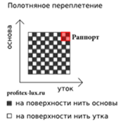
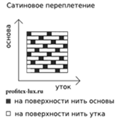
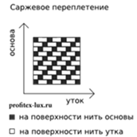
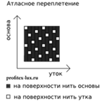

Как прошел RUVIERA Hotel Business Week 2025?
16.12.2025
В данной статье мы рассмотрим основные термины и понятия, которые могу пригодятся при выборе качественной ткани для Вашего объекта гостеприимства.
Ткань представляет собой текстильное полотно, изготовленное путём переплетения взаимно перпендикулярных систем нитей. Две переплетающихся системы нитей расположены взаимно перпендикулярно. Систему нитей, идущих вдоль ткани, называют основой, а систему нитей, расположенных поперек ткани, — утком.
Число нитей основы, после которого начинают повторяться в прежнем порядке все предыдущие переплетения основных нитей, называется основным раппортом. Аналогично определённый раппорт для уточных нитей называется уточным раппортом. Законченная часть рисунка переплетения ткани, при повторении которой получается непрерывный рисунок называется раппортом переплетения. Раппорт, при всех равных ТХ ткани, влияет на внешний вид ткани. Поэтому очень важно обращать внимание на данную характеристику при выборе тканей.
Ткань представляет собой пространственную сетку из прямоугольных или квадратных ячеек, образуемых двумя взаимно перпендикулярными системами нитей – основными, расположенными вдоль ткани, и уточными, лежащими поперек.
В зависимости от способа взаимных переплетений нитей основы и утка, выделяют четыре основных класса главных переплетений: полотняное, саржевое, атласное и сатиновое.

Полотняное переплетение. Самый простой вид. Нити основы и утка перекрывают друг друга в каждых двух последовательных перекрытиях (с наименьшим возможным раппортом). Таким образом, раппорт основы равен раппорту утка. Лицевая сторона и изнанка ткани получаются одинаковыми. Полотняным переплетением вырабатывают ткани: бязь, тиси, перкаль, поплин.

Сатиновое переплетение получают путем перекрытия одной нитью утка четырех нитей основы. Может быть вариант 2/5.

Саржевое переплетение. Образует на поверхности ткани видимый диагональный рубчик. Основные и уточные переплетения располагаются со сдвигом в одну сторону на одну нить. Характеризуется наличием на ткани диагоналевых полос, идущих снизу-вверх направо. Ткань саржевого переплетения более плотная и растяжимая. Ткани саржевого переплетения по прочности уступают тканям полотняного переплетения, но превосходят их по мягкости.

Атласное переплетение.Переплетения получают путем перекрытия одной нитью основы четырех нитей утка. Лицевой застил образован нитями основы. Отличительная особенность – лицевая сторона ткани приобретает гладкость и повышенный блеск.
Все остальные типы переплетений — это разновидности и компиляции главных видов.
Сатин. Плотная хлопчатобумажная ткань. Изготавливается путем двойного переплетения хлопковых натуральных нитей. Полотно довольно плотное, имеет шелковистую структуру и глянцевый блеск. Сатиновая ткань гигроскопична, прочная, обладает хорошей износостойкостью, не вызывает аллергии. Ткань устойчива к стирке: не теряет форму и не линяет. Сатин в основном применяют для изготовления постельного белья. Из сатина также шьют мужские рубашки, платья, применяют как ткань для подкладки. Сатин выдерживает стирку до 95°C. Если на изделии из сатина есть окрашенные элементы, рекомендуется стирать при температуре не выше 60°C, а сатин экстра-класса при температуре до 40°C. Средства, используемые при стирке, не должны содержать отбеливатели.
Помимо сатина из 100% хлопка, существует и активно используется в сфере гостеприимства смесовый сатин. Наиболее популярные соотношения хлопок/пэ: 80/20, 70/30, 60/40, 50/50. Благодаря инновационным технологиям, смесовый сатин сохраняет свойства хлопковой ткани, имея при этом более высокие показатели износостойкости. Такие ткани активно используют мировые сетевые отели. Например, Marriott используют смесовый сатин 50/50, а отели сети Hilton в зависимости от бренда: 100% х/б, 80/20, 60/40 (хб/пэ соответственно).
Перкаль. Хлопчатобумажная ткань. Изготавливается из тонких и средних, предварительно обработанных шлихтой, некрученых нитей хлопка. Обработка делает ткани более износостойкими, повышаются антистатические свойства, устраняются шероховатости – ткань приобретает дополнительную мягкость и эластичность. При производстве могут добавляться волокна льна и полиэстера. Ткань гигроскопична, гипоаллергенна, обладает хорошей износостойкостью и не утрачивает первоначальной привлекательности после множества стирок, не линяет, не деформируется. Перкаль чаще всего используется для изготовления простыней, пододеяльников, наволочек, легких одеял и покрывал. Стирка рекомендуется при температуре не выше 60°C. Помимо перкали из 100% хлопока, существует и активно используется в сфере гостеприимства смесовая перкаль, сеть отелей Azimut закупают для постельного белья в номерной форд смесовую перкаль – 50/50. Премиальный сетевой отель Sofitel, сети Accor, использует пекраль 100% хб.
Тиси. Смесовая ткань. Обычно содержит 65 % полиэстера и 35 % хлопка. Иногда добавляется вискоза. Состав (пропорции) варьируются. Содержание синтетической составляющей может достигать 80%. Благодаря натуральной составляющей у ткани есть все те гигиенические качества, которые необходимы для комфорта. Синтетические волокна придают ей прочность, лишают способности мяться, обеспечивают долговечность. Обычно используется для пошива корпоративной и рабочей одежды. Изделия рекомендуется стирать при температуре до 40 °C, если использована цветная отделка – без отбеливателя. Возможна стирка при 60 °C. Ткань Тиси, как правило, используется в медицине для пошива одежды сотрудников сферы здравоохранения.
Бязь. Хлопчатобумажная ткань. Допускается добавление полиэфирной нити – не более 50%. Характеризуется перекрестным переплетением нитей. Особый способ переплетения обеспечивает хорошую плотность ткани и делает ее устойчивой к износу. Сохраняет прекрасный внешний вид на протяжении долгого времени. Материал характеризуется однородной матовой поверхностью. Изнанка и лицевая сторона бязи имеют одинаковую структуру. Ткань используется для пошива постельного белья: она гипоаллергенна, гигроскопична, воздухопроницаема, не электризуется, выдерживает большое количество стирок без утраты цвета, имеет предсказуемые показатели по усадке. Стирать рекомендуется без отбеливателей при температуре до 40 °C. Возможна стирка при 60 °C и даже выше. Ткань бязь, как правило, используется в медицине для пошива постельного белья, халатов, костюмов и прочего.
Бязь российского производства как правило по составу 100% хлопок, а вот бязь производства Китай и Пакистан встречается в различных смесовых вариантах до 50/50.
Euroval. Смесовая ткань. Запатентованная конструкция плетения. Состоит из хлопчатобумажной нити в основе и полиамидной по утку. Полиамидное волокно – микрофиламент отличается высокой прочностью при растяжении, а также стойкостью к истиранию и многократному использованию. Плетение осуществляется таким образом, что после первых нескольких циклов стирки волокна хлопка полностью покрывают нити полиамида. На ощупь такая ткань ничем не будет отличаться от 100% хлопчатобумажной. Не боится стирки при высоких температурах. Стирать рекомендуется при температуре до 70 °C. Рекомендуем для использования в отелях 3*. Отели сети Accor – Ibis, Mercure, Novotel работают на ткани Euroval.
Поплин. Хлопчатобумажная ткань. Характеризуется перекрестным переплетением. Особенность – разная толщина нитей. Ткань изготавливают путём попеременного пересечения толстых продольных нитей основы и тонких вертикальных нитей уток. Ткань используется для пошива постельного белья. Она гипоаллергенна, гигроскопична, воздухопроницаема, не электризуется, выдерживает большое количество стирок без утраты цвета и заметной усадки. Допускается добавление полиэфирной нити – не более 15%. Поплин, состоящий из хлопка на 100%, не боится стирки при высоких температурах, отжима на больших скоростях. Стирать рекомендуется при температуре до 60°C.
Фланель. Хлопчатобумажная ткань. Производят по технологии саржевого плетения. Чтобы повысить теплозащитные свойства фланели, на её поверхности формируют начес. Отличается минимальной сминаемостью, что достигается обработкой ткани специальными составами. Ткань используется для пошива мужской и женской одежды, в том числе для детей, спецодежды. Фланель хорошо сохраняет тепло, воздухопроницаемая, прочная, сохраняет стойкость цвета. Стирать рекомендуется при температуре до 60°C.
Тенсел. Искусственная ткань натурального происхождения. Изготавливается из древесной целлюлозы эвкалипта. Из этой массы путем продавливания через фильеры в кислотный состав, формируются нити. Волокно хорошо поддаётся окрашиванию, ткань не линяет при стирке и не выцветает при воздействии солнечных лучей. Чистое волокно Тенсел дорогое, поэтому его часто смешивают с хлопковым, бамбуковым волокном, шерстью или вискозой. Ткань используется в бытовых, медицинских и технических целях. Плюсы материала: экологичность, высокая прочность, эластичность, антистатичность, воздухопроницаемость, хорошая терморегуляция и гигроскопичность. Стирать ткань рекомендуется при щадящем температурном режиме до 30°C.
Модал. Полусинтетическое вискозное волокно. Модал можно назвать модернизированной вискозой. Волокно получают путем специального процесса, который называют «вискозным». Из древесной стружки происходит извлечение целлюлозы, затем осуществляется особая химическая обработка. Материал обладает всеми характеристиками натурального хлопка, при этом имеет более высокую плотность, хорошую воздухопроницаемость, вещи из модала необычайно мягкие и легкие. Ткань после стирки не теряет свои качества: не садится, сохраняет форму, не теряет цвет и не линяет, остается мягкой, бархатистой и нежной. Полотно необычайно прочное на износ и разрыв, практически не мнется и не электризуется.
Плотность ткани — это число нитей основы и нитей утка, приходящихся на 10 квадратных сантиметров ткани.
Линейная плотность – это фактическое число нитей в одном квадратном дециметре ткани. В зависимости от типа сырья, фактическая плотность отрезка ткани одного размера и веса различна. Например, у грубых льняных тканей она в пределах пятидесяти нитей, у шелковых может доходить до тысячи.
Поверхностная плотность ткани — это показатель, характеризующий массу одного квадратного метра ткани в граммах, г/м2 (в граммах на один квадратный метр). Важный показатель прочности ткани и зависит от линейной плотности, вида, структуры и способа крутки нитей в полотне. Регламентируется ГОСТом.
Чаше всего на бирках текстильных изделий указывается именно тип ткани и поверхностная плотность, либо тип ткани и линейная плотность, например, сатин, ТС250 (сумма нитей основы и утка на 10 см.кв.). Например – сатин, 130 г/м2. Это означает, что один квадратный метр такой ткани будет весить 130 грамм. Зная значение поверхностной плотности можно оценить вес будущего изделия ещё на стадии покупки ткани.
Линейная и поверхностная плотность – самые важные показатели качества ткани. Чем выше эти показатели, тем выше качество полотна, его износостойкость и прочность.
Однако премиальные ткани могут иметь линейную плотность – 300, а поверхностную 115 г/м.кв. Это говорит о том, что ткань будет прочная и тонкая, что позволяет получить износостойкую ткань и сократить операционные расходы на стирку.
Крашение ткани – это химическое соединение красителя с тканью или прочное физическое соединение красителя с волокнами тканей. Процесс покраски тканей состоит из нескольких фаз: адсорбции, диффузии, фиксации красителя на волокне.
Группы красителейСанфоризация. Технология противоусадочной отделки хлопковой или другой ткани, которая, по сути, является процессом предварительной усадки ткани.
Аппретирование. Пропитка ткани специальным составом, в основе которого содержится крахмал, синтетическая смола, декстрина. Ткани после такой обработки становятся более жесткими, плотными, тяжело сминаются.
Декатировка. Обработка шерстяных тканей горячей водой или паром. Позволяет избежать усадки тканей при дальнейшем использовании.
Карбонизация. Обработка шерстяных тканей слабым раствором серной кислоты для удаления растительных примесей.
Мерсеризация. Обработка хлопковых тканей концентрированными щелочами в натянутом состоянии. Процесс отделки придает большую прочность, блеск и шелковистость.
Оживка. Пропуск через кислотную ванну шёлковых тканей для придания полотну более благородного вида и улучшения интенсивности цвета и его оттенка.
Отбеливание. Обработка при помощи отбеливающих растворов для удаления природной окраски волокон ткани, предания белого цвета, подготовки к последующему окрашиванию.
Печатание. Нанесения красочного рисунка, который может состоять из одного или нескольких различных цветов. Получение различных узоров на ткани. Процесс печатания иногда называют набивкой, а обработанные таким методом ткани именуются печатными или набивными.
Огнеупорная пропитка ткани. Поверхностная огнезащита тканей, основанная на образовании на изделии труднорастворимых соединений. Уменьшение пожарной опасности тканей производится с помощью поверхностной или объемной обработки ткани антипиренами — огнезащитными средствами на основе ингибиторов.
Масло-водоотталкивающая отделка. Снижает способность волокнистых материалов поглощать грязь в виде жидких масел, а также в виде водных растворов суспензий и эмульсий различных веществ.
Водо- и грязеотталкивающая пропитка. Обеспечивает повышенную защиту ткани от воды и грязи, при этом, как правило, сохраняется хорошая воздухопроницаемость.
Кислотозащитная обработка. Применяется для тканей технического и специального назначения. Обработка производится фторсодержащими органическими соединениями. Ткань считают кислотозащитной, если 30 капель 20% (50%, 80%) кислоты, нанесённые на пробы, оставались на поверхности ткани, не впитываясь в неё в течении 6 часов.
Антистатическая отделка. Применяется для тканей из полиэфирных волокон, которые способны накапливать на своей поверхности заряды статического электричества. Ткань пропитывают раствором антистатического препарата, отжимают и высушивают.
Ознакомьтесь с широким ассортиментом профессиональных текстильных изделий в каталоге ПРОФЭКВИП.
Или позвоните нам по телефону, мы всегда на связи!